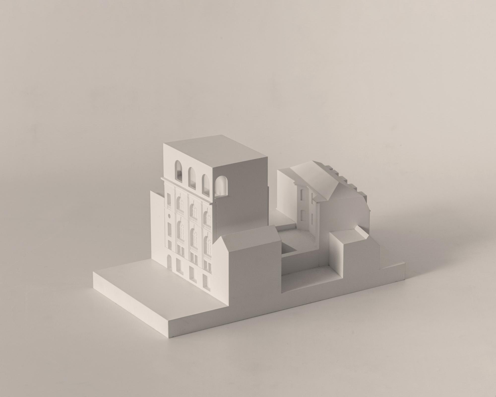

1. Something unusual that may be perceived by the senses.
2. When viewed stirs some kind of emotion or probes questions of inquiry
3. To break apart : rupture
4. To throw into disorder
5. An interruption in the usual way that a system, pro- cess, or event works 6. We only notice our interactions with things around us(furniture, architecture etc.) when they break or stop functioning as they are supposed to. Why is that the case? How can we start to truly pay attention to the things around us to engage with them beyond just their function.
REFERENCES
THING THEORY
BILL BROWN
THING

Barozzi Veiga
Jewish Museum of Belgium
Brussels, Belgium
2020